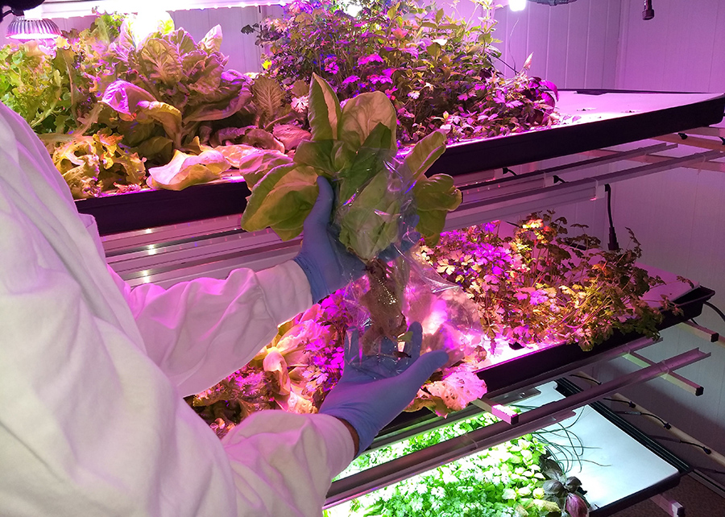
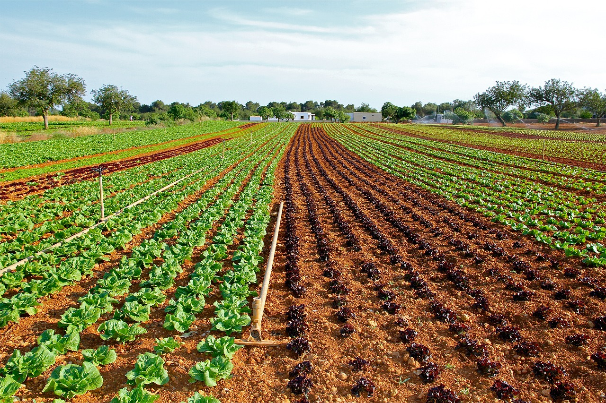
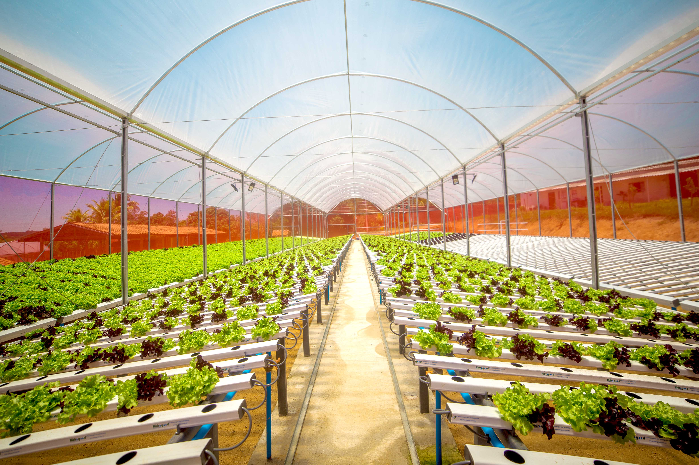

Modelos de cultivos eficientes
Fazenda vertical
Na agricultura em ambiente controlado, também conhecida como agricultura indoor, são otimizados artificialmente todos os fatores ambientais que afetam o crescimento e a produção vegetal. Na foto, folhosa recém-colhida e produzida em fazenda vertical
Cultivo de campo
O cultivo de campo é o mais aplicado no Brasil, com variações regionais que não chegam descaracterizá-lo. O preparo do solo deve ser realizado cerca de 30 a 60 dias antes do plantio, para atingir a profundidade média de 30 a 35 cm , deve-se conciliar a calagem as estas operações.
Cultivo hidropônico
A técnica consiste em cultivar plantas em ambientes protegidos, sem a utilização do solo, por meio de uma solução que contém todos os nutrientes essenciais para o crescimento das plantas.